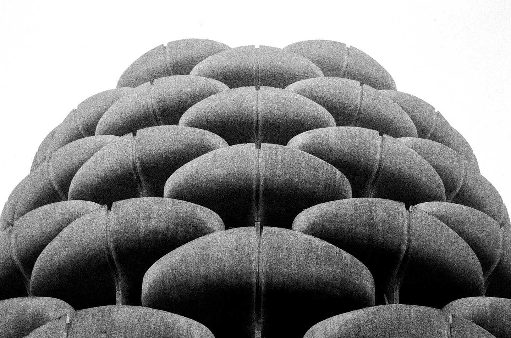
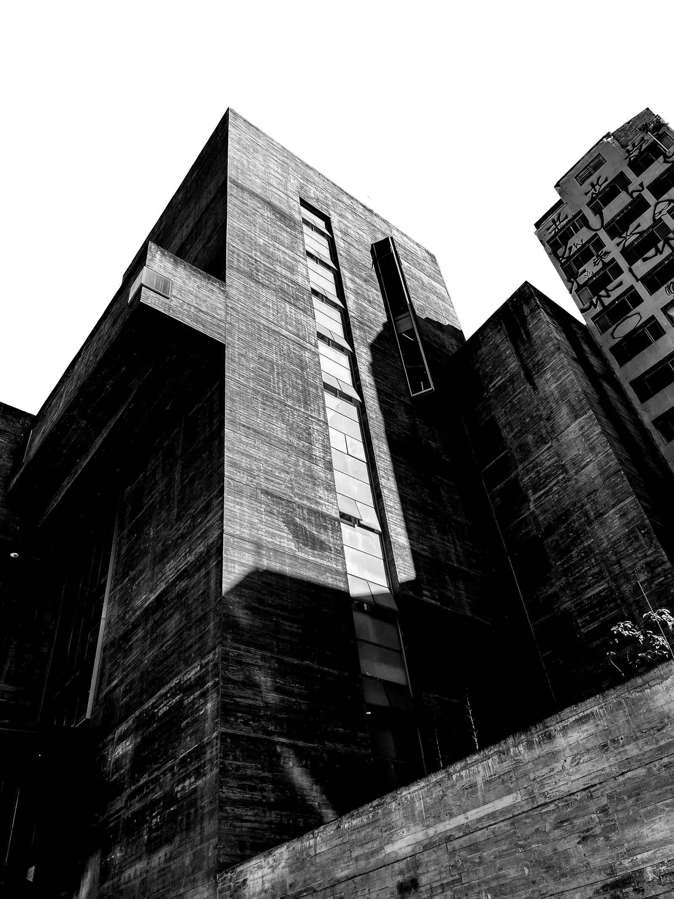
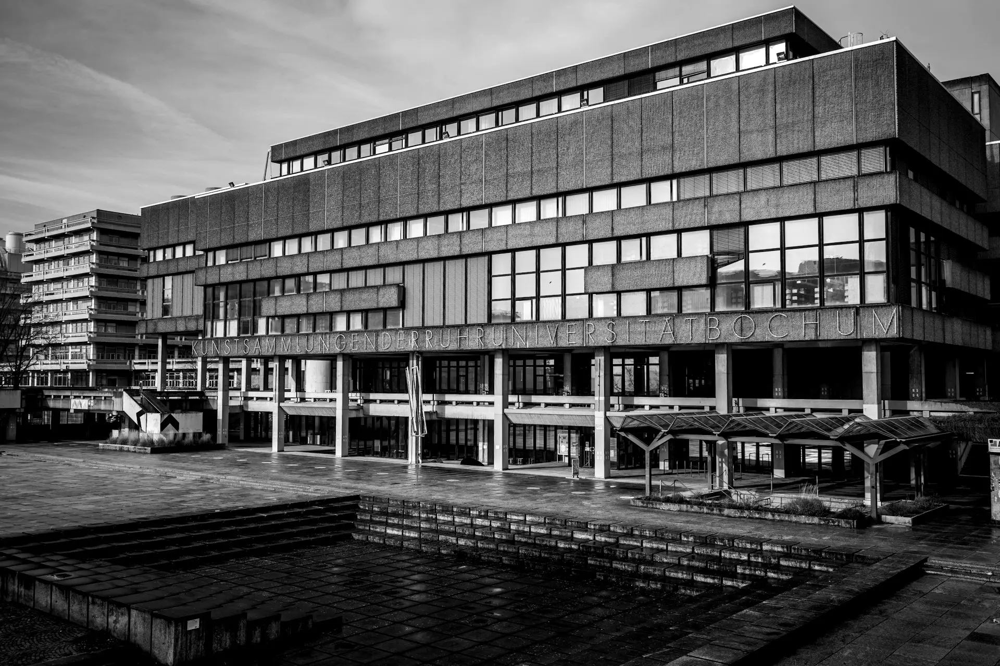
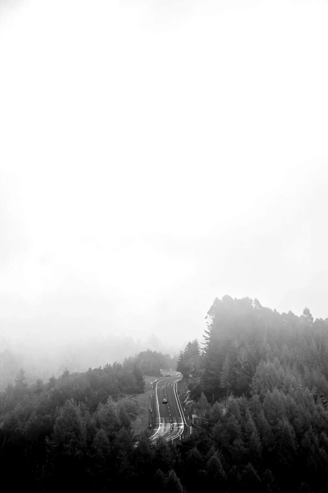
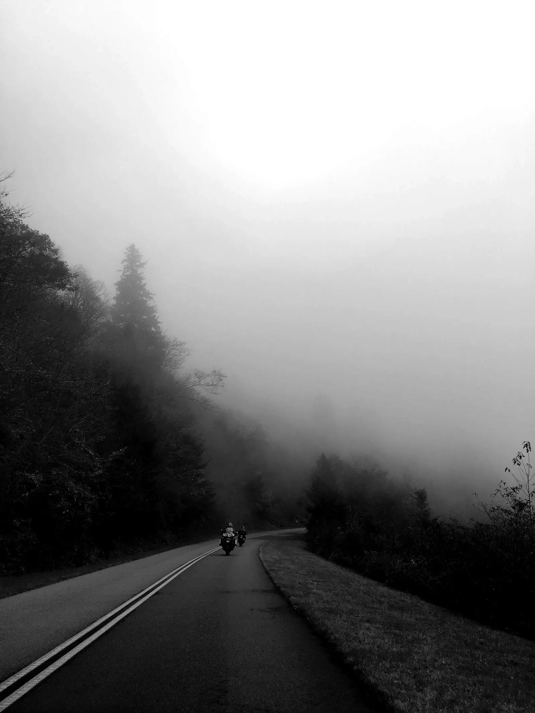
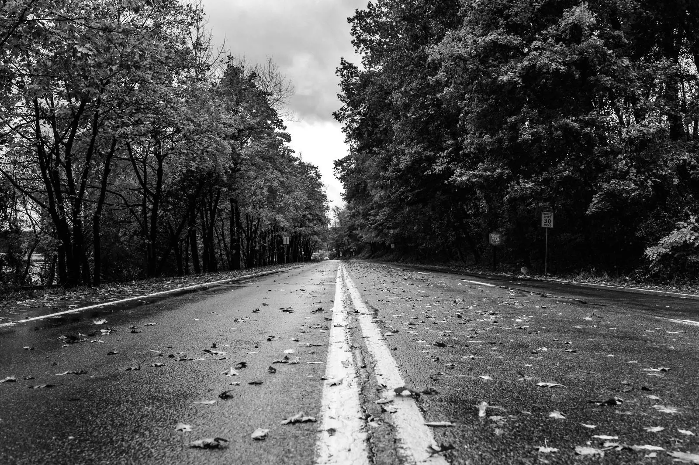
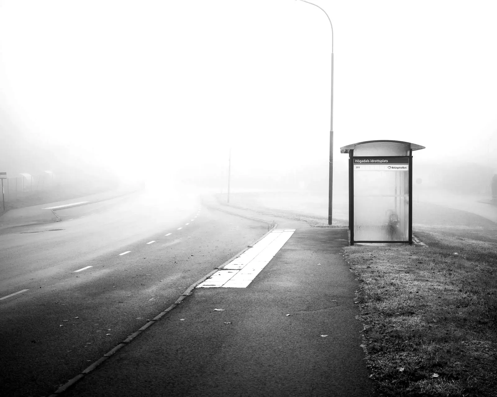

void / frame: photography sample
up and down arrows, and left and right, move between plates. enter opens the plate full screen. escape closes it. keys 1 2 3 switch series.
001·02 / 007 · plate 2 of 7, pause, no image





002·02 / 005 · plate 2 of 5, pause, no image

003·02 / 005 · plate 2 of 5, pause, no image



this archive has been removed.